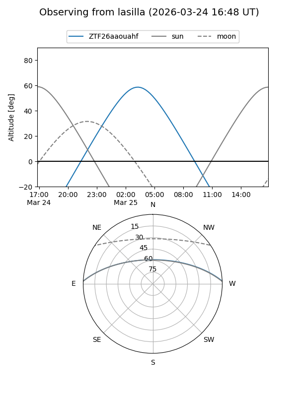
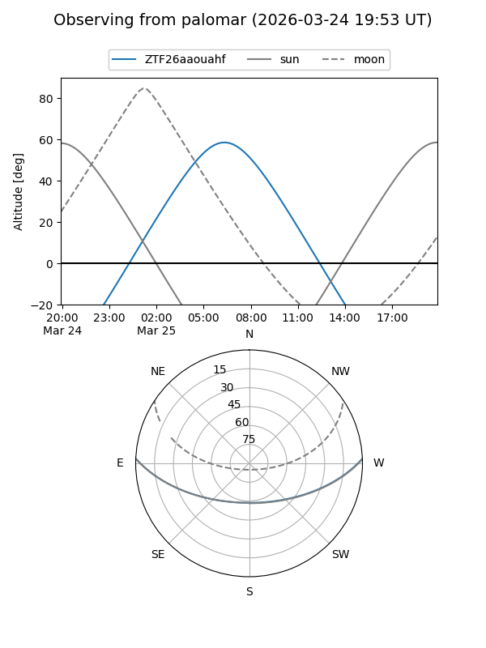

ZTF26aaouahf
Target ZTF26aaouahf at 2026-03-25 07:48
Aliases and brokers:
FINK: link
Lasair: link
ALeRCE: link
alt names
ZTF26aaouahf (ztf,fink_ztf)
Coordinates:
equatorial (ra, dec) = 160.4104,+2.14340
equatorial (HMS+DMS) = 10:41:38.49,+02:08:36.23
galactic (l, b) = (246.1598,+50.13541)
Flags:
Photometry:
last ztfg=17.17, ztfr=16.47
1 ztfg, 1 ztfr detections
Lightcurve
Visibility


Additional plots